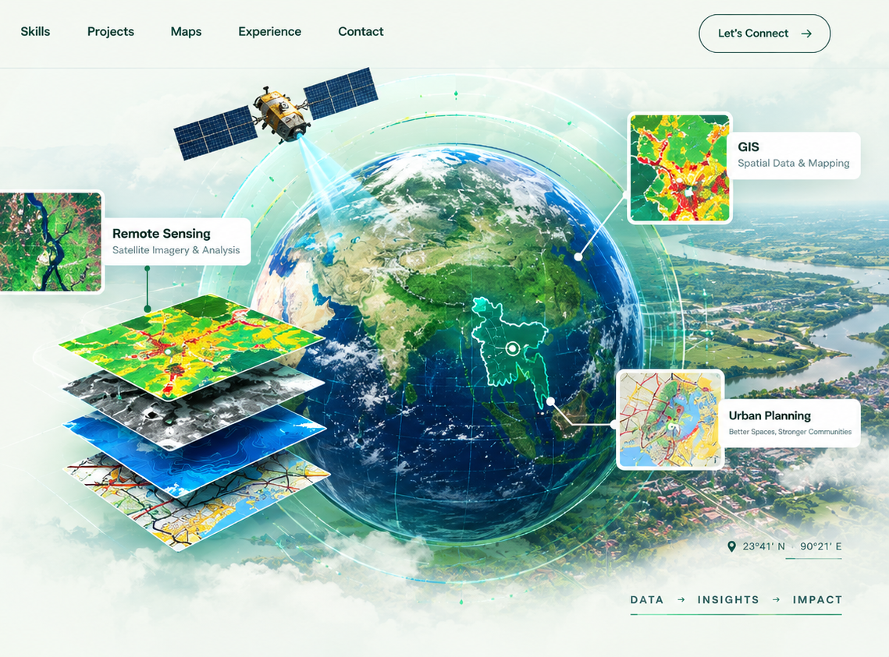

GIS & Spatial Analysis
ArcGIS Pro, QGIS, overlay, proximity, suitability and spatial database workflows.
ArcGIS Pro · QGIS · Spatial DBGIS • REMOTE SENSING • URBAN PLANNING
Spatial analysis, remote sensing, cartography and planning-focused GIS solutions for evidence-based development.

01 / ABOUT
I work at the intersection of geospatial technology and development planning. My experience includes satellite-image processing, crop pattern analysis, thematic mapping, spatial databases, land-use analysis and planning support.
Currently, I serve as a National Consultant – Jr. GIS Expert with the Urban Development Directorate (UDD).
02 / EXPERTISE
From raw satellite pixels to polished planning maps.
ArcGIS Pro, QGIS, overlay, proximity, suitability and spatial database workflows.
ArcGIS Pro · QGIS · Spatial DBSentinel-2, Landsat, spectral indices, classification, crop mapping and change analysis.
Sentinel-2 · Landsat · IndicesCloud satellite processing, temporal composites, band analysis and raster workflows.
GEE · JavaScript · RasterBatch clipping, extraction, reclassification and repeatable geoprocessing automation.
Python · ArcPy · AutomationUpazila planning, land use, population, transportation and suitability analysis.
Planning · LULC · SuitabilityPublication-ready layouts, thematic maps and presentation-focused spatial graphics.
Maps · Layout · Visualization03 / SELECTED PROJECTS
Multi-cropping analysis using BAMIS crop calendars, Sentinel-2 imagery, Google Earth Engine and ArcGIS Pro, identifying single, double and triple-crop areas.
Sentinel-2 · GEE · ArcGIS Pro · PythonSpatial datasets for land use, population, transportation, waterbodies, agriculture, facilities and urban suitability.
Land Use · Suitability · Planning · CartographySpatial interpretation of recharge potential using terrain, hydrological and land-surface information for planning support.
Hydrology · DEM · Overlay · GISGIS and remote sensing assistance for survey-based research on perceptions, attitudes and impacts of environmental pollution in Dhaka City.
Survey · GIS · ResearchResearch support focused on perception, coping and adaptation strategies related to landslide hazards.
Hazard · Adaptation · GISArcPy clip() extract() reclass() export()GIS AUTOMATION
Python-assisted workflows for batch raster clipping, extraction, reclassification and repeatable GIS outputs.
Python · ArcPy · Raster04 / HOW I WORK
A practical workflow for complex spatial questions.
05 / EXPERIENCE
Professional and project experience across planning, remote sensing, environmental research and GIS automation.
GIS and spatial-analysis support for urban, rural and regional development planning, thematic mapping and spatial database workflows.
Crop pattern analysis, planning datasets, environmental research, hazard studies, cartography and automated raster processing.
06 / MAP GALLERY
Add your real JPG/PNG maps here later.
07 / CONTACT
Open to GIS projects, research collaboration, mapping work and professional opportunities.